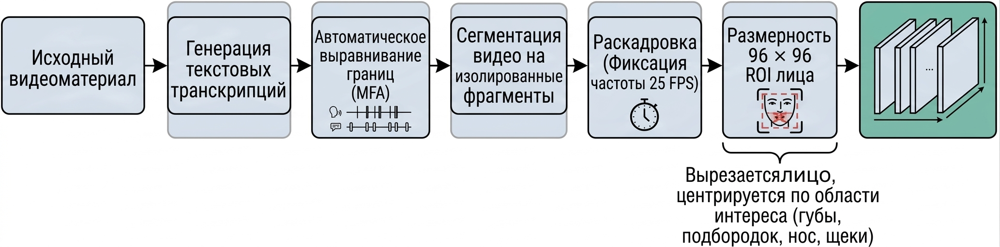
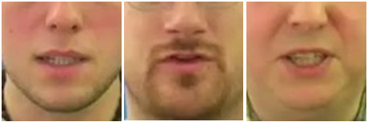
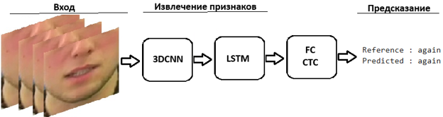
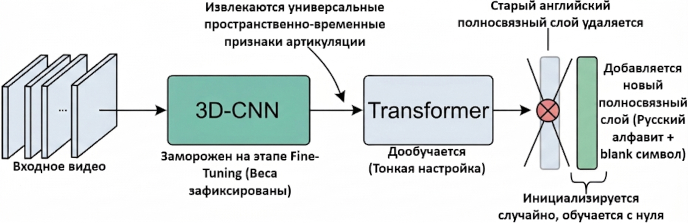

Содержание
- Введение
- 1. Актуальность темы
- 2. Цель и задачи исследования, планируемые результаты
- 3. Обзор исследований и разработок
- 3.1 Обзор мировых исследований
- 3.2 Обзор национальных разработок
- 3.3 Обзор локальных результатов
- 4. Разработка и оптимизация архитектуры нейросетевого распознавания
- Выводы
- Список источников
Введение
Устная речь – это наиболее универсальный и естественный способ общения человека. Однако в современном мире все чаще диагностируются заболевания, приводящие к временной или стойкой потере способности говорить [1]. При этом во многих случаях у пациентов полностью сохраняется сознание, понимание обращенной речи и потребность в полноценном общении. Они продолжают использовать артикуляцию, но отсутствие звука при разговоре приводит к сложностям в коммуникации с медицинским персоналом и родственниками [2]. В таких случаях возникает необходимость в использовании средств альтернативной и дополнительной коммуникации.
Одним из перспективных направлений развития таких средств являются системы визуального распознавания речи, основанные на использовании нейронных сетей и методов глубокого обучения.
1. Актуальность темы
В настоящее время существуют различные виды средств альтернативной и дополнительной коммуникации (АДК), такие как язык жестов, блисс-символы, пиктограммы, коммуникативные таблицы, система PECS, специализированные клавиатуры. Однако их применение не всегда возможно из-за требований к физической активности пациента, а также необходимости использования рук и мелкой моторики, что исключено при тяжелом течении заболеваний [3]. Более того лица, осуществляющие уход, часто не обладают нужным опытом и подготовкой для эффективного общения с пациентами, которые утратили способность говорить, а применение существующих средств АДК ограничивается нехваткой времени для установления такого понимания, знаний и особенностью ситуации. Это обуславливает растущую на сегодняшний день потребность в системах АДК для людей с нарушениями голосовой функции, которые бы позволили распознавать слова по движению губ человека.
2. Цель и задачи исследования, планируемые результаты
Цель исследования — разработка системы визуального распознавания ограниченного набора русских речевых команд по видеопоследовательностям артикуляции без использования аудиосигнала.
В связи с поставленной целью в данной работе решаются следующие задачи:
- Изучить существующие решения в области визуального распознавания речи и систем АДК;
- Проанализировать существующие архитектуры нейронных сетей и выбрать подходящую модель;
- Исследовать возможности применения методов переноса обучения для адаптации модели к русскому языку;
- Сформировать русскоязычный датасет для обучения нейронной сети;
- Адаптировать предварительно обученную модель к распознаванию русских речевых команд с использованием метода переноса обучения;
- Провести оценку качества распознавания;
- Разработать веб-систему АДК на основе полученной модели.
Объект исследования: процесс визуального распознавания речевых единиц по видеопоследовательностям артикуляционных движений.
Предмет исследования: методы обработки видеопоследовательностей и нейросетевого моделирования, применяемые для визуального распознавания ограниченного набора русских речевых единиц без использования аудиосигнала.
В рамках магистерской работы планируется получение актуальных научных результатов по следующим направлениям:
- Экспериментальная оценка возможности переноса знаний модели, обученной на видеоданных английского языка, на задачу распознавания ограниченного набора русских речевых команд;
- Оценка качества распознавания после адаптации модели и анализ характерных ошибок при обработке русскоязычных видеопоследовательностей;
- Выявление особенностей и ограничений применения переноса обучения в условиях ограниченного объёма русскоязычных обучающих данных.
Планируемый практический результат исследования — программная система визуального распознавания русских речевых команд с веб-интерфейсом, позволяющим передавать видеопоследовательность артикуляционных движений, получать результат распознавания и отображать его пользователю. Разработанный прототип может послужить основой для дальнейшего развития средств альтернативной и дополнительной коммуникации для людей с нарушениями голосовой функции.
3. Обзор исследований и разработок
3.1 Обзор мировых исследований
Одним из наиболее известных примеров систем визуального распознавания речи является приложение SRAVI, разработанное компанией Liopa после многолетних исследований [4]. SRAVI предназначено для пациентов с нарушениями речевой функции после трахеостомии, инсульта, паралича и других заболеваний и способно преобразовывать беззвучные движения губ в текст или аудиоформат. Использование приложения возможно на любых мобильных устройствах с фронтальной камерой. Перед началом процесса распознавания устройство располагается перед лицом пациента, после чего алгоритмы компьютерного зрения выполняют автоматическое обнаружение и отслеживание движения губ. В результате в течение нескольких секунд на экран выводятся три наиболее вероятных варианта фраз. Приложение SRAVI имеет лицензию медицинского изделия, но недоступно для индивидуального использования, его поставка осуществляется только по запросу медицинских организаций. Словарь распознавания системы ограничивается набором 40 заранее заданных фраз, которые были выбраны с учетом основных потребностей пациента. Точность работы приложения в идеальных условиях составляет 90%, однако в реальной клинической обстановке (недостаточное освещение, повязки, наклон головы) значение этого показателя снижается. Также система SRAVI поддерживает только английский язык, что существенно ограничивает ее использование для русскоязычных пациентов.
Другим примером систем АДК для людей, утративших способность говорить вследствие болезни, является приложение Lip2ja, созданное исследовательской группой Осакского университета [5]. Lip2ja представляет собой систему для чтения по губам, интегрированную с речевой платформой CoeFont. В процессе работы приложение с помощью алгоритмов машинного обучения анализирует положение губ, впоследствии сопоставляя полученные признаки со словами на японском языке. Встроенный синтез речи позволяет подобрать индивидуальный тембр для озвучивания фраз, а также воссоздать голос пациента по записям, сделанным до проведения операции. Однако из-за фонетических особенностей японского языка приложение распознает только ограниченный набор фраз, наиболее используемых при общении пациента с медицинским персоналом.
Также существует специализированная архитектура VSRICU для чтения по губам пациентов реанимации, разработанная исследователями Рейнско-Вестфальского университета Ахена в Германии [6]. Такая модель объединяет в себе два подхода: аудио и визуальное распознавание. На первом этапе нейронная сеть с помощью входных видеокадров лица пациента генерирует аудиопризнаки и использует их в качестве промежуточных значений. На втором этапе на основе полученных характеристик формируется итоговый текстовый результат распознавания. Для обучения модели исследователями был собран датасет, содержащий 238 фраз на английском и немецком языках, записанных при участии пациентов реанимации. Сам словарь команд был отобран опытными врачами для учета наиболее важных тем в общении пациента с медицинским персоналом и родственниками. Такой отказ от использования общедоступных аудиовизуальных датасетов позволил сосредоточиться на специфических условиях больничной палаты и упростил процесс обучения нейронной сети.
3.2 Обзор национальных разработок
Одним из примеров национальных исследований в области визуального распознавания речи является разработка специалистов Санкт-Петербургского Федерального исследовательского центра РАН (СПб ФИЦ РАН), направленная на повышение точности работы голосовых помощников в шумных условиях [7]. В основе разработанной системы находится нейронная сеть, обученная распознаванию нескольких сотен команд по аудиовизуальным признакам. Так, нейронная сеть автоматически выбирает, какой тип данных даст максимальную точность. Тестирование работы системы проводилось при участии водителей большегрузных автомобилей. Точность распознавания команд только по чтению губ составила 60-80%, а в комбинации со звуковым сигналом – более 90%.
В работе Г. С. Афанасенко рассматриваются этапы разработки системы визуального распознавания русской речи [8]. В качестве нейросети реализована архитектура LipNet. Однако на момент публикации обучение модели еще продолжалось, поэтому показатели качества распознавания в статье не представлены.
3.3 Обзор локальных результатов
Среди смежных исследований, выполненных в КубГУ, можно отметить работы, посвященные обнаружению лица и обнаружению его ориентиров с помощью нейронных сетей. В работе А. А. Шульги и Е. П. Лукащик рассматривается задача обнаружения лица на изображениях [9]. В публикации Д. Ю. Романюты и Е. П. Лукащик исследуется задача определения характерных точек лица [10].
4. Разработка и оптимизация архитектуры нейросетевого распознавания
Наибольший практический интерес представляет разработка модели, адаптированной к визуальному распознаванию речи на русском языке. Однако в открытом доступе отсутствуют русскоязычные датасеты, которые бы соответствовали условиям рассматриваемой задачи. При этом обучение нейронной сети с нуля для чтения речи по губам требует большого объема данных, так как в языке присутствует множество фонем, визуально неотличимых друг от друга. Сбор и разметка собственного русскоязычного датасета требует огромных затрат временных и вычислительных ресурсов, что нерационально в рамках текущего исследования. В связи с этим, оптимальным решением является применение метода переноса обучения, предполагающего адаптацию англоязычной модели к особенностям русского языка.
Для этого на начальном этапе исследования была разработана и обучена нейронная сеть для визуального распознавания английских слов. Для ее обучения среди открытых и свободно доступных наборов данных был выбран датасет GRID [11]. Датасет GRID отличается высоким качеством данных, однако из-за заданного шаблона фраз не отражает структуру естественной разговорной речи. По этой причине из исходных предложений были выделены отдельные слова, которые в последствии использовались как самостоятельные обучающие примеры. Но при формировании итогового датасета применялись не все представленные слова, из выборки были исключены предлоги и отдельные буквы. Это связано с их малой временной протяженностью и низкой артикуляционной информативностью. Так, был сформирован набор данных, включающий 22 слова.
Следующим этапом была выполнена предварительная обработка данных. Для этого исходные видеозаписи были сегментированы с использованием текстовых транскрипций и временных границ начала и окончания произношения каждой команды. Затем полученные фрагменты были разбиты на последовательности кадров. Для каждого кадра с помощью инструмента MediaPipe выделялась область интереса.

Рисунок 1 — Предварительная обработка данных
На начальном этапе подготовки датасета в качестве области интереса рассматривалась только зона губ. Однако в ходе анализа выяснилось, что при таком способе часть важной информации об артикуляции теряется. Хотя губы и являются основным визуальным компонентом артикуляции, речь складывается в результате взаимодействия нескольких анатомических частей лица. Например, положение нижней челюсти указывает на степень раскрытия рта, движение щек – на его округление или растяжение. Расширение области интереса также повышает устойчивость к смещению лица в кадре и особенностям мимики диктора. В результате для области интереса были выбраны координаты, соответствующие подбородку, части щек и основанию носа. Затем была выполнена обрезка каждого кадра по полученной области и приведение его к фиксированному размеру 96 на 96.

Рисунок 2 — Примеры изображений из датасета
Для распознавания английских слов была разработана модель, состоящая из трехмерной сверточной сети для извлечения пространственно-временных признаков артикуляции, двунаправленной LSTM для моделирования временных зависимостей, полносвязного слоя и CTC декодирования на выходе [12]. Функция потерь CTC сопоставляет входные последовательности кадров с целевыми метками без точного покадрового соответствия между ними, что характерно для задачи чтения речи по губам.

Рисунок 3 — Архитектура модели для распознавания английских слов
Оценка качества работы модели проводилась на тестовой выборке, состоящей из 26 тысяч примеров, с использованием двух метрик. По метрике CER результат составил 14,18%. Это означает, что 14% символов было распознано неверно. Значение метрики WER составило 23,77%, то есть 24% слов было распознано неверно. Таким образом, 76% слов было распознано полностью корректно.
На следующем этапе полученная модель была дообучена на собственном англоязычном датасете из смешанных, более шумных видеозаписей, полученных в Интернете. Данный шаг был необходим для повышения обобщающей способности сети и ее адаптации к особенностям целевого применения системы, в силу того что русскоязычных датасетов, записанных в идеальных условиях, не существует.
Подготовка русскоязычного датасета выполнялась с помощью разработанной ранее последовательности методов предварительной обработки, включающей сегментацию видео по временным границам, извлечение области интереса и преобразование в кадры фиксированного размера. Сформированный русскоязычный датасет состоит из видеоданных, собранных из открытых интернет-источников и полученных при участии знакомых.
Для адаптации англоязычной модели к русскому языку использовался метод переноса обучения. Выбранная архитектура модели состоит из двух основных компонентов. Первая часть, представленная трехмерной сверточной сетью, извлекает первоначальные пространственно-временные признаки артикуляции, из-за чего она может быть перенесена без изменений для работы с новым языком. Это связано с тем, что визуальные характеристики и динамика движений артикуляционного аппарата не зависят от конкретного языка, а являются универсальными. Так, предобученные веса сверточной сети могут использоваться для адаптации всей модели. Вторая часть архитектуры, соответствующая рекуррентной сети и выходному полносвязному слою, требует обязательного дообучения на новых данных с измененным словарем, который состоит из символов русского алфавита. При этом все остальные компоненты архитектуры модели остаются без изменений.
В отличие от промежуточного дообучения на смешанном англоязычном датасете, где словарь распознаваемых символов и команд оставался неизменным, переход к другому языку предполагает полное изменение выхода модели. Для этого с помощью метода переноса обучения веса английской модели, адаптированной к зашумленным данным, были перенесены в структуру новой русскоязычной сети. Затем из значений параметров были удалены весовые коэффициенты выходного полносвязного слоя, так как его размерность не соответствовала мощности словаря русских символов. В архитектуру был добавлен новый полносвязный слой, связанный с целевым алфавитом и учитывающий также специальный blank-символ, необходимый для правильной работы функции потерь CTC. Далее применялся метод тонкой настройки обучения. Так, все слои трехмерной сверточной сети были заморожены, в то время как параметры рекуррентной сети и обновленного полносвязного слоя изменялись в процессе обучения.

Рисунок 4 — Применение метода переноса обучения
Для оптимизации параметров использовался алгоритм Adam, отличающийся адаптивной настройкой шага для каждого веса сети. Для сохранения извлеченных ранее признаков и аккуратной перенастройки нейросети на русский язык была выбрана уменьшенная скорость обучения по сравнению с этапом предварительного обучения. Также вместо планировщика OneCycleLR был использован алгоритм ReduceLROnPlateau. В силу того, что при тонкой настройке сети требуется лишь корректировка весов модели, а не обучение с нуля, скорость обучения необходимо изменять плавно, чтобы не допустить катастрофического забывания ранее сформированных признаков. Планировщик ReduceLROnPlateau снижает шаг градиентного спуска только в те моменты, когда целевая метрика качества распознавания на валидационной выборке перестает улучшаться. Это позволяет всем компонентам архитектуры постепенно синхронизироваться, предотвращая изменение параметров замороженных слоев и обеспечивая быстрое обучение выходных слоев.
На текущем этапе проводится обучение обновленной модели на сформированном русскоязычном наборе данных. Модель обучается сразу на двух частях датасета (интернет-видеозаписи и собственные), однако взятых с различной частотой включения этих источников. Причем больший вес отводится собственным записям, так как они наиболее соответствуют предполагаемым условиям применения разрабатываемой системы.
По результатам промежуточной оценки на 22 эпохе обучения значение CER составило 13,52%, а WER- 24,17%. Обучение модели продолжается. Для определения эффективности выбранного подхода требуется завершить обучение, оценить качество распознавания на тестовой выборке, проанализировать полученные ошибки и при необходимости внести изменения.
Также были определены основные функциональные компоненты разрабатываемой системы для визуального распознавания речевых команд: модуль захвата видеоданных и их предварительной обработки, модуль распознавания речи и модуль представления результата в текстовом и звуковом форматах. Дальнейшая работа предполагает завершение обучения и оценки модели, а также реализацию и проверку разработанной системы.
Выводы
Визуальное распознавание речи представляет собой одно из перспективных направлений развития интеллектуальных систем обработки видеоданных и средств альтернативной и дополнительной коммуникации. При этом создание моделей для русского языка осложняется ограниченностью доступных видеоданных и неоднозначностью визуального представления отдельных речевых единиц. В связи с этим исследование возможности адаптации предварительно обученных нейросетевых моделей к распознаванию русской речи представляет практический интерес. Магистерская работа посвящена разработке и исследованию системы визуального распознавания ограниченного набора русских речевых команд с использованием методов глубокого обучения и переноса обучения. В рамках проведённого исследования выполнено:
- Разработана и обучена нейросетевая модель для визуального распознавания английских слов на основе открытого датасета GRID. Проведена экспериментальная оценка модели, по результатам которой значения метрик CER и WER составили 14,18% и 23,77% соответственно.
- Разработан процесс предварительной обработки видеоданных, включающий сегментацию видеозаписей, выделение области интереса с использованием MediaPipe и преобразование видеокадров к единому размеру.
- Выполнено дополнительное обучение англоязычной модели на видеоматериалах из открытых интернет-источников для адаптации к более разнообразным условиям съёмки.
- Сформирован русскоязычный набор видеоданных, включающий материалы из открытых интернет-источников и собственные видеозаписи.
- Реализован перенос обучения предварительно обученной модели на задачу распознавания русской речи с адаптацией выходного слоя к целевому алфавиту. Проведено промежуточное обучение модели на русскоязычных данных; на двадцатой эпохе значения CER и WER составили 13,51% и 24,8% соответственно.
- Определены основные функциональные компоненты разрабатываемой системы, включающие захват и предварительную обработку видеоданных, распознавание речевых команд и вывод результата в текстовом и звуковом форматах.
Дальнейшие исследования направлены на следующие аспекты:
- Завершение обучения русскоязычной модели и проведение итоговой оценки качества распознавания на независимой тестовой выборке.
- Анализ ошибок распознавания и исследование влияния состава обучающих данных на качество работы модели.
- Экспериментальное исследование эффективности переноса обучения при адаптации модели к русскому языку, в том числе посредством сравнения с альтернативными вариантами обучения.
- Реализация и проверка программного прототипа системы визуального распознавания русских речевых команд.
При написании данного реферата магистерская работа еще не завершена.
Окончательное завершение: июнь 2027 года.
Полный текст работы и материалы по теме могут быть получены у автора или его руководителя после указанной даты.
Список источников
- Sun, H. Global burden of head and neck cancer: Epidemiological transitions, inequities, and projections to 2050 / H. Sun, M. Yu, Z. An [et al.] // Frontiers in Oncology. – 2025. – Vol. 15. – Art. 1665019. – DOI 10.3389/fonc.2025.1665019.
- Brambilla, S. Communication difficulties in mechanically ventilated voiceless patients in intensive care units: A qualitative study / S. Brambilla, D. Ausili, G. Locatelli [et al.] // Nursing in Critical Care. – 2025. – Vol. 30, № 3. – Art. e70037. – DOI 10.1111/nicc.70037.
- Yau, S. H. Comparing and contrasting barriers in augmentative alternative communication use in nonspeaking autism and complex communication needs: multi-stakeholder perspectives / S. H. Yau, K. Choo, J. Tan [et al.] // Frontiers in Psychiatry. – 2024. – Vol. 15. – Art. 1385947. – DOI 10.3389/fpsyt.2024.1385947.
- Musalia, M. A user evaluation of speech/phrase recognition software in critically ill patients: a DECIDE-AI feasibility study / M. Musalia, S. Laha, J. Cazalilla-Chica [et al.] // Critical Care. – 2023. – Vol. 27, № 1. – Art. 277.
- AI lip-reading app to playback lip movements — Voices lost due to illness can now be restored : [сайт]. – URL: https://sj.jst.go.jp/news/202412/n1202-03k.html (дата обращения: 11.07.2026).
- Laux, H. Two-stage visual speech recognition for intensive care patients / H. Laux [et al.] // Scientific Reports. – 2023. – Vol. 13. – Art. 928.
- Метод визуального анализа лица водителя для автоматического чтения речи по губам при управлении транспортным средством / А. А. Аксенов, Д. А. Рюмин, А. М. Кашевник [и др.] // Компьютерная оптика. – 2022. – Т. 46, № 6. – С. 955-962. – DOI 10.18287/2412-6179-CO-1092. – EDN LLQFSW.
- Афанасенко, Г. С. Чтение по губам русской речи на основе технологии распознавания лиц / Г. С. Афанасенко // 81-я научная конференция студентов и аспирантов Белорусского государственного университета : Материалы конференции. В 3-х частях, Минск, 15–25 мая 2024 года. – Минск: Белорусский государственный университет, 2024. – С. 188-191. – EDN OYUMAV.
- Шульга, А. А. Методика обнаружения лица для систем видеоконтроля на основе нейронной сети / А. А. Шульга, Е. П. Лукащик // Прикладная математика: современные проблемы математики, информатики и моделирования : Материалы III всероссийской научно-практической конференции молодых ученых, Краснодар, 21–24 апреля 2021 года. Том II. – Краснодар: ФГБУ "Российское энергетическое агентство" Минэнерго России Краснодарский ЦНТИ- филиал ФГБУ "РЭА" Минэнерго России, 2021. – С. 115-120. – EDN CTWECA.
- Романюта, Д. Ю. Нейросетевая модель для распознавания ориентиров лица / Д. Ю. Романюта, Е. П. Лукащик // Прикладная математика: современные проблемы математики, информатики и моделирования : материалы V Всероссийской научно-практической конференции, молодых ученых, Краснодар, 11–15 апреля 2023 года. – Краснодар: ФГБУ "Российское энергетическое агентство" Минэнерго России Краснодарский ЦНТИ- филиал ФГБУ "РЭА" Минэнерго России, 2023. – С. 460-463. – EDN RGHMKU.
- The GRID audiovisual sentence corpus : [сайт]. – URL: https://spandh.dcs.shef.ac.uk/gridcorpus/ (дата обращения: 10.10.2026).
- Ма, К. Трехмерное глубокое обучение на Python : руководство / К. Ма, В. Хегде, Л. Йольан; перевод с английского А. В. Логунова. – Москва: ДМК Пресс, 2023. – 226 с. – ISBN 978-5-93700-202-0.